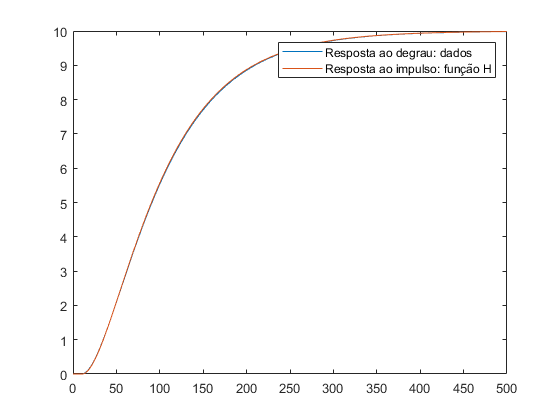
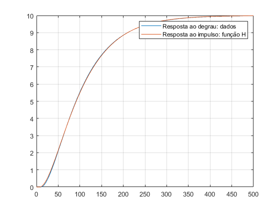
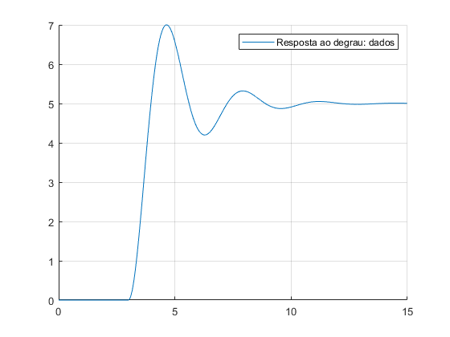
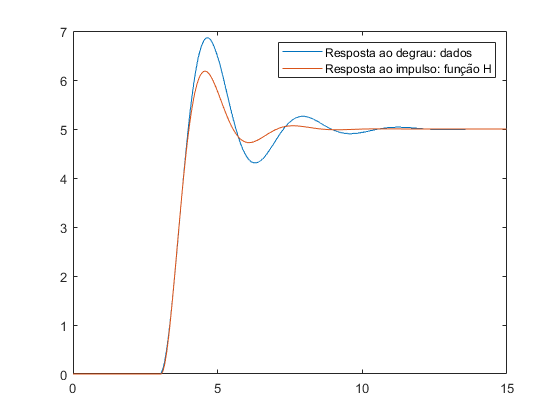
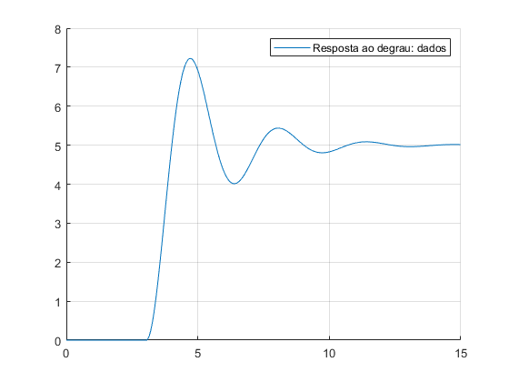
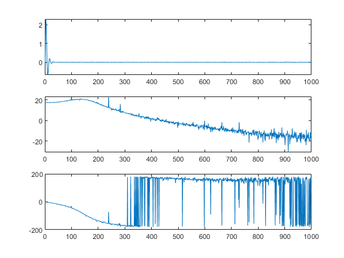

Laboratório de Sistemas Dinâicos
Pratica 10 22/08/2024 Autores: Victor Hugo Daia Lorenzato e Whilker Henrique Santos Silva
Contents
Limpar WorkSpace
clear;
clc;
dados = load('dadosordem2sobre.txt');
Ex1(a)
clear; clc; close all; dados = load('dadosordem2sobre.txt'); k = 10; y1 = 0.15 * k; y2 = 0.45 * k; y3 = 0.75 * k; indice1 = find(dados(:,3) <= y1, 1, 'last' ); indice2 = find(dados(:,3) <= y2, 1, 'last' ); indice3 = find(dados(:,3) <= y3, 1, 'last' ); t1 = dados(indice1,1); t2 = dados(indice2,1); t3 = dados(indice3,1); x = (t2 - t1)/(t3 - t1); zeta = (0.0805-5.547*(0.475 - x)^2)/(x - 0.356); if zeta >= 1 f1 = 2.6*zeta - 0.6; else f1 = 0.708*(2.811)^zeta; end w = f1/(t3-t1); f2 = 0.922*(1.66)^zeta; teta = t2 - f2/w; tal1 = (zeta + sqrt(zeta^2 - 1))/w; tal2 = (zeta - sqrt(zeta^2 - 1))/w; s = tf('s'); H = k*exp(-teta*s)/((tal1*s+1)*(tal2*s+1)) plot(dados(:,1), dados(:,3)); hold on; y1 = step(H, dados(:,1)); plot(dados(:,1), y1); legend('Resposta ao degrau: dados','Resposta ao impulso: função H'); mse = mean((dados(:,3) - y1).^2); fprintf("O erro médio quadrático (MSE) é %.3f\n", mse);
H =
10
exp(-10.4*s) * ----------------------
2041 s^2 + 98.93 s + 1
Continuous-time transfer function.
O erro médio quadrático (MSE) é 0.000
 Ex1 (b)
clear; clc; close all; dados = load('dadosordem2sobre.txt'); dados_normalizados = (dados(:,3))/10; m1 = trapz(dados(:,1),dados(:,2) - dados_normalizados); tm = 158; t1 = 21; M1 = 1/(tm-t1); lambda = (tm-m1) * M1; eta = 0.52; tal1 = eta^(eta/(1-eta))/M1; tal2 = eta^(1/(1-eta))/M1; teta = m1-tal1-tal2; k = 10; s = tf('s'); H = k*exp(-teta*s)/((tal1*s+1)*(tal2*s+1)); plot(dados(:,1), dados(:,3)); hold on; grid on; y1 = step(H, dados(:,1)); plot(dados(:,1), y1); legend('Resposta ao degrau: dados','Resposta ao impulso: função H'); mse = mean((dados(:,3) - y1).^2); fprintf("O erro médio quadrático (MSE) é %.3f\n", mse);
O erro médio quadrático (MSE) é 0.001
Limpar WorkSpace
clear;
clc;
dados = load('dadosordem2sub.txt');
Ex2 (a)
clear; clc; close all; dados = load('dadosordem2sub.txt'); K = 5; %Análise visual teta = 3; %Análise visual zeta = 0.6/2; t_pico = 4.64 - teta; %Identificação no gráfico w_n = pi/(t_pico*sqrt(1-zeta^2)); tal = 1/(zeta*w_n) + teta; hold on; grid on; s = tf('s'); t = 0:0.015:14.985; H = (K*exp(-teta*s)*(w_n)^2)/(s^2+2*zeta*w_n*s+(w_n)^2) y = step(H,t); plot(t,y); fprintf('K = %.2f °C/V \n', K); fprintf('theta = %.2f segundos \n', teta); fprintf('tal = %.2f segundos \n', tal); fprintf('zeta = %.2f \n', zeta); fprintf('w_n = %.2f \n', w_n); legend('Resposta ao degrau: dados','Resposta ao impulso: função H'); mse = mean((dados(:,3) - y).^2); fprintf("O erro médio quadrático (MSE) é %.3f\n", mse);
H =
20.16
exp(-3*s) * ---------------------
s^2 + 1.205 s + 4.032
Continuous-time transfer function.
K = 5.00 °C/V
theta = 3.00 segundos
tal = 4.66 segundos
zeta = 0.30
w_n = 2.01
O erro médio quadrático (MSE) é 0.000

Ex2 (b)
clear; clc; close all; dados = load('dadosordem2sub.txt'); K = 5; %Análise visual teta = 3; %Análise visual t_pico = 4.64 - teta; %Identificação no gráfico % Analisando o valor de overshoot, nota-se que Mp = 37%. Desse modo, % analisando o gráfico nos slides, temos zeta = 0,28 zeta = 0.28; w_n = pi/(t_pico*sqrt(1-zeta^2)); tal = 1/(zeta*w_n) + teta; hold on; grid on; s = tf('s'); t = 0:0.015:14.985; H = (K*exp(-teta*s)*(w_n)^2)/(s^2+2*zeta*w_n*s+(w_n)^2) y = step(H,t); plot(t,y); fprintf('K = %.2f °C/V \n', K); fprintf('theta = %.2f segundos \n', teta); fprintf('tal = %.2f segundos \n', tal); legend('Resposta ao degrau: dados','Resposta ao impulso: função H'); mse = mean((dados(:,3) - y).^2); fprintf("O erro médio quadrático (MSE) é %.3f\n", mse);
H =
19.91
exp(-3*s) * ---------------------
s^2 + 1.117 s + 3.982
Continuous-time transfer function.
K = 5.00 °C/V
theta = 3.00 segundos
tal = 4.79 segundos
O erro médio quadrático (MSE) é 0.002
 Ex2(c)
clear; clc; close all; dados = load('dadosordem2sub.txt'); K = 5; y1 = 0.15 * K; y2 = 0.45 * K; y3 = 0.75 * K; indice1 = find(dados(:,3) <= y1, 1, 'last' ); indice2 = find(dados(:,3) <= y2, 1, 'last' ); indice3 = find(dados(:,3) <= y3, 1, 'last' ); t1 = dados(indice1,1); t2 = dados(indice2,1); t3 = dados(indice3,1); x = (t2 - t1)/(t3 - t1); zeta = (0.0805-5.547*(0.475 - x)^2)/(x - 0.356); f1 = 0.708*(2.811)^zeta; w_n = f1/(t3-t1); f2 = 0.922*(1.66)^zeta; teta = t2 - f2/w_n; tal1 = (zeta + sqrt(zeta^2 - 1))/w_n; tal2 = (zeta - sqrt(zeta^2 - 1))/w_n; s = tf('s'); H = K*exp(-teta*s)/((tal1*s+1)*(tal2*s+1)) plot(dados(:,1), dados(:,3)); hold on; t = 0:0.015:14.985; y1 = step(H, t); plot(t, y1); legend('Resposta ao degrau: dados','Resposta ao impulso: função H'); mse = mean((dados(:,3) - y1).^2); fprintf("O erro médio quadrático (MSE) é %.2f\n", mse); fprintf('K = %.2f °C/V \n', K); fprintf('theta = %.2f segundos \n', teta); fprintf('tal = %.2f segundos \n', tal1); fprintf('zeta = %.2f \n', zeta); fprintf('w_n = %.2f \n', w_n);
H =
5
exp(-3.04*s) * -------------------------
0.1938 s^2 + 0.3678 s + 1
Continuous-time transfer function.
O erro médio quadrático (MSE) é 0.05
K = 5.00 °C/V
theta = 3.04 segundos
tal = 0.18 segundos
zeta = 0.42
w_n = 2.27
 Ex2 (d)
clear; clc; close all; dados = load('dadosordem2sub.txt'); K = 5; dados_normalizados = (dados(:,3))/5; m1 = trapz(dados(:,1),dados(:,2) - dados_normalizados); tm = 4; %% Intersecção com o regime permanente t1 = 3.2; %% Ponto de Inflexão M1 = 5/(tm-t1); lambda = (tm-m1)*M1; zeta = 0.25; w_n = acos(zeta)/(sqrt(1-zeta^2)*(tm - m1)); teta = m1 - 2*zeta/w_n; s = tf('s'); H = (K*exp(-teta*s)*w_n^2)/(s^2+2*zeta*w_n*s+w_n^2) grid on; hold on; t = 0:0.015:14.985; y1 = step(H, t); plot(t,y1); legend('Resposta ao degrau: dados','Resposta ao impulso: função H'); mse = mean((dados(:,3) - y1).^2); fprintf("O erro médio quadrático (MSE) é %.3f\n", mse); fprintf('K = %.2f °C/V \n', K); fprintf('theta = %.2f segundos \n', teta); fprintf('zeta = %.2f \n', zeta); fprintf('w_n = %.2f \n', w_n);
H =
18.82
exp(-3.04*s) * ----------------------
s^2 + 0.9701 s + 3.765
Continuous-time transfer function.
O erro médio quadrático (MSE) é 0.024
K = 5.00 °C/V
theta = 3.04 segundos
zeta = 0.25
w_n = 1.94
 Limpar WorkSpace
clear;
clc;
dados = load('dadosordem2aleatorio.txt');
Ex3 (a)
clear ; clc; close all; dados = load('dadosordem2aleatorio.txt'); y = dados(:,3); u = dados(:,2); t = dados(:,1); tam_u = length(u); MatReg = zeros(tam_u/2, tam_u/2); for i = 1:tam_u/2 for j = 1:tam_u/2 MatReg(i,j) = u(tam_u/2-j+i); end end H = inv(MatReg) * y(1000:end-1); subplot(3,1,1); plot(H); y_fft = fft(y); u_fft = fft(u); h_jw = y_fft./u_fft; fase = angle(h_jw); fase = fase*180/pi; ganho = abs(h_jw); subplot(3,1,2); plot(20*log10(ganho(1:end/2))); subplot(3,1,3); plot(fase(1:end/2));